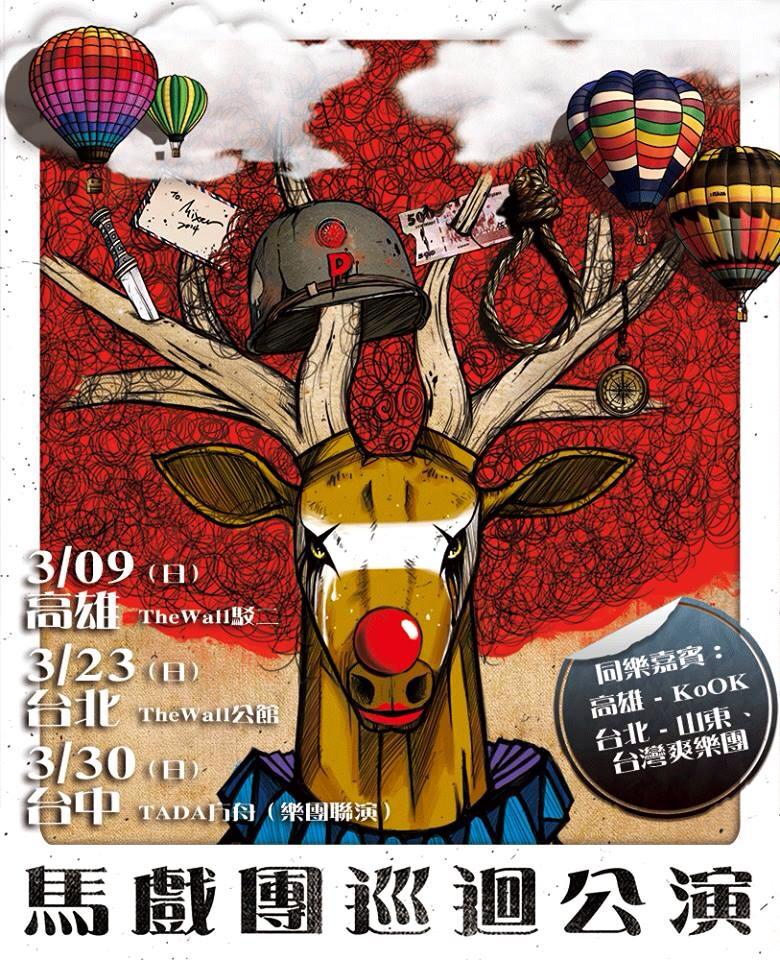
2014年3月馬戲團巡迴公演
麋先生發行了首張全創作音樂作品「馬戲團運動」
在經歷了發片後至今九個多月的時間，我們用自己的方式，努力點燃自己人
生所遇見的每個機會、每個當下，而最重要堅定著我們的是：看見每一個支
持我們和懂我們的你!我們知道這些不斷碰撞相遇的歷程，正在不停的孕育轉
化成我們的新作品，相信接下來的麋先生將因此而更加成熟茁壯。這個三月，
我們邀請每一個你和你們，共同來分享並感受和麋先生一起站上即將邁入另一
階段的新起點。
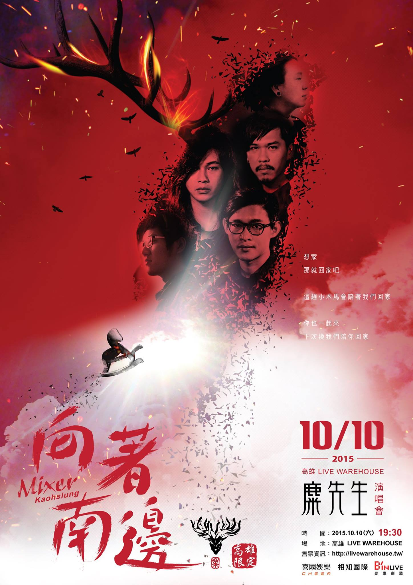
2015年10月Mixer2015【向著南邊】演唱會
或許和大多數人一樣，離開了熟悉的地方，走向人生的戰場，換上了武裝，卻也
不時的想起來時的路線和方向。2015年10月10號，一起回去吧，帶著這些日子的
驕傲和傷，跟著麋先生一起回家。
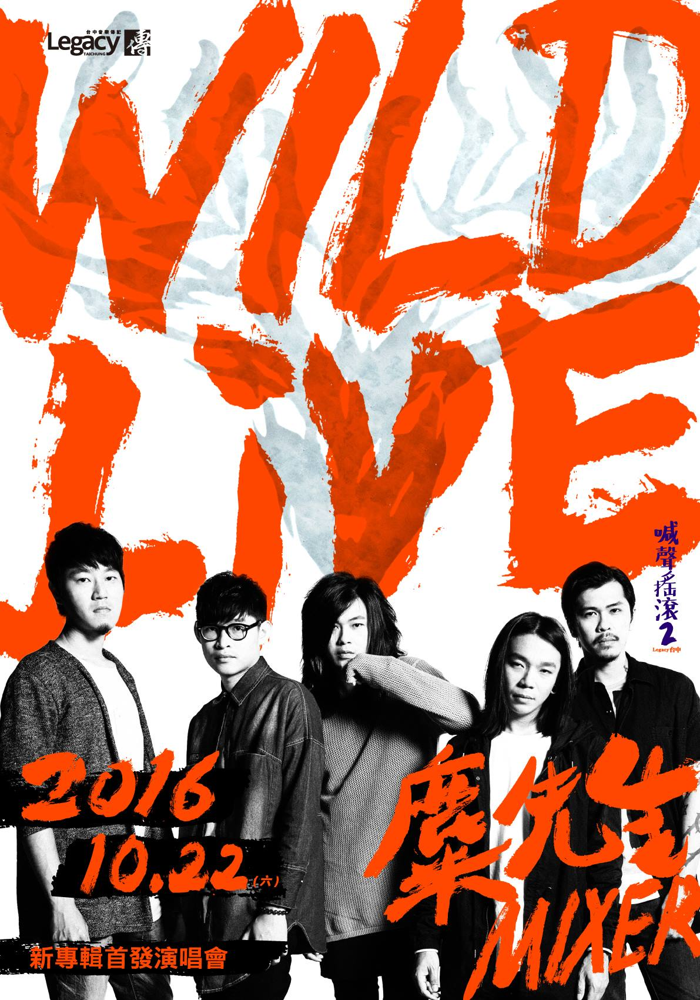
2016年10月WILD Live-「麋先生」2016 新專輯首發演唱會
2016 麋先生 在台中--全數野放 攻佔食物鏈--繼台北高雄演唱會之後，麋先生
2016以台中為起站，開啟接下來全新的階段。這也是麋先生自2012創團至今首次
在台中舉辦專場演唱會，帶著這一年七個月的日子、帶著這些日子給我們的掙扎及
成長、帶著這些掙扎成長間的感性及野性，在這天，攻佔食物鏈。
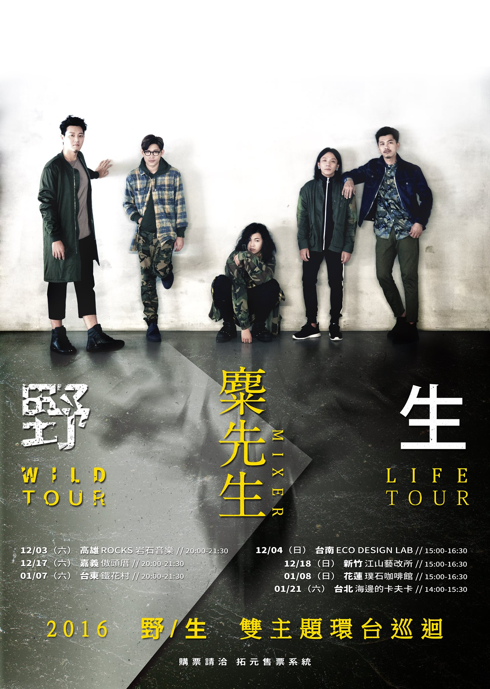
2016年12月~2017年1月麋先生【野／生】雙主題環台巡迴演唱會
2016年10月28日，麋先生發行第三張全新專輯【野生】，專輯主題圍繞著「野」與
「生」之間的衝突與和諧，是該在規則中學習生存，還是在生存中訂下規則。延續了
專輯概念，這次的新專輯巡迴也選擇了「雙主題」式的表演方式，讓「野」與「生」
的概念能夠透過主題性的演出進行更完整的表達。「野巡迴」保留了以往麋先生的表
演風格，以Full Band的方式表現歌曲中衝擊以及抗衡的情緒。「生巡迴」則是以不
插電和類講座的方式作為節目的主軸，希望能透過更簡單與純粹直接的方式，讓觀眾
與麋先生有更近距離不同層次的聆聽交流。
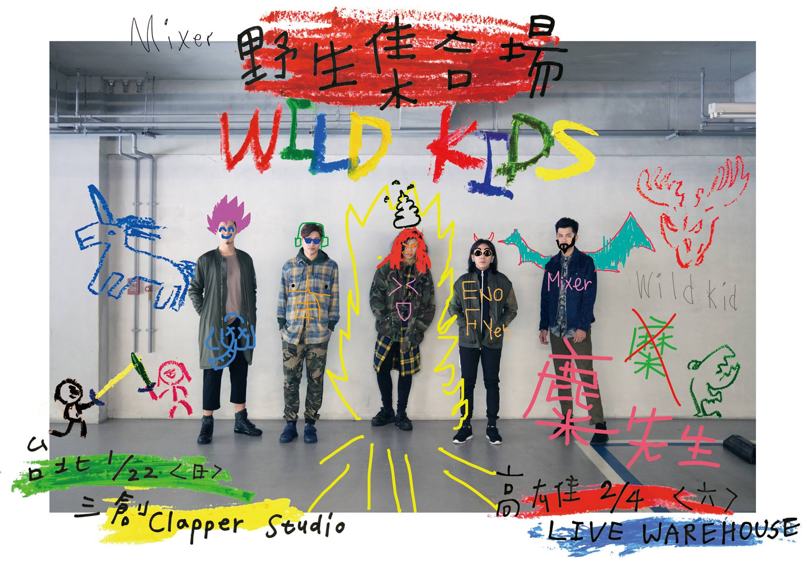
2017年1月WILD KIDS 野生集合場
「野，沒有規矩，沒有一定生，有著細膩，有著理性，不是衝突，不是逃避，當它們
聚集，就是自己。」還記得第一次毫不猶豫的下筆，毫無顧忌的創意，天馬行空的讓
想法成形，而現在，塗鴉紙是自己，在包裝好的輪廓線裡，畫上最不規則想像力，它
不用合理，因為那就是你。我們各自找著，往各自的前方狂奔，然後，在這裡集合。
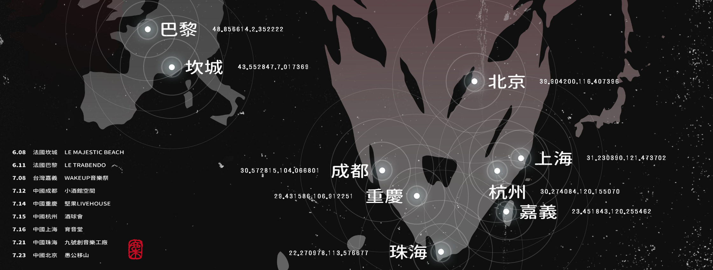
2017年6月~2017年7月【野／生】歐亞巡迴演唱會
帶着自己未經馴化的樣貌，走進充滿規則的遊戲中，在遊樂園中當個盡情遊玩的孩子，
或是當個汲汲找着出口的大人?我們什麼時候開始被無形的規矩所捆綁?能與不能、應該
與不應該?你想在規則中學習生存，還是在生存中訂下規則。
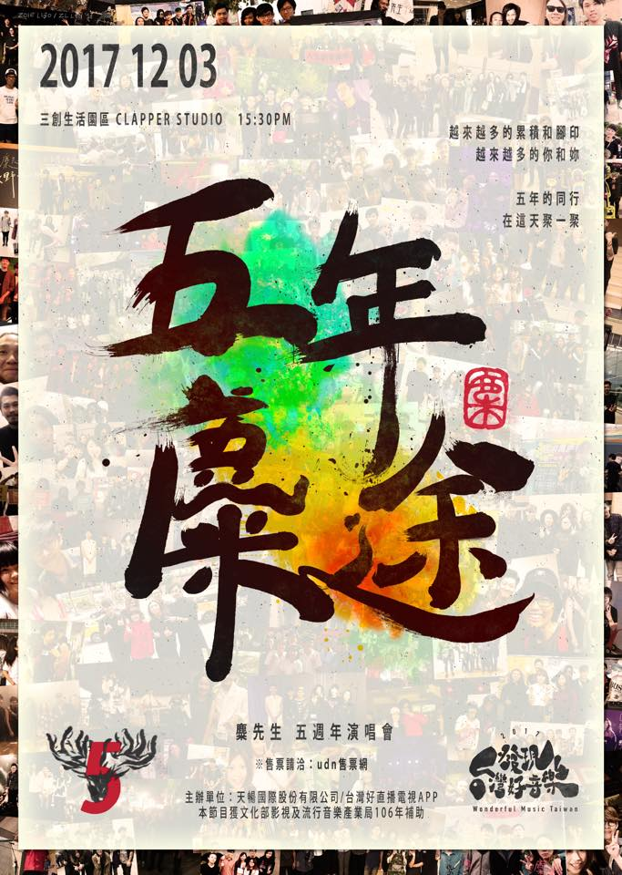
2017年12月五年麋途
五年了，記不記得認識彼此那天的情景?來一起回憶吧!在這天，一起敘敘舊慶祝我們
這五年麋途。
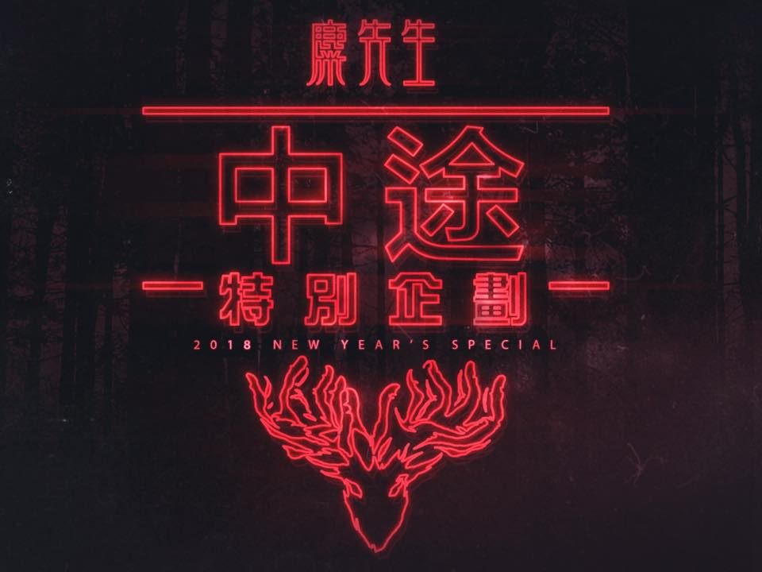
2018年2月中途特別企劃
在不停往前走的途中，偶爾還是要見見老朋友，那些你最想聽的、最懷念的、最想合
唱的讓我們陪你大聲唱。『子安聖皓』／『玫瑰花牛肉』／『Dark Gent』那些你還
沒來得及參與的過往，都在今天限定回歸。
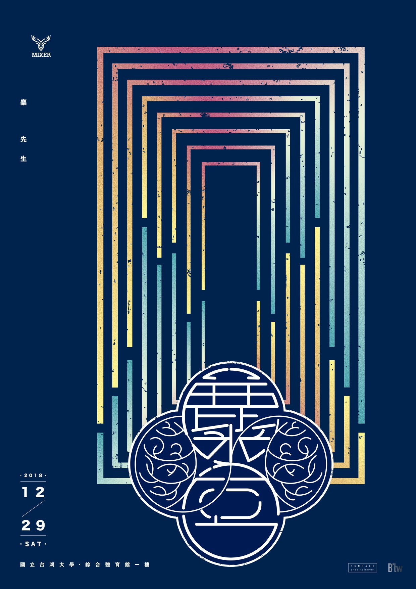
2018年12月麋宮
關於昨天的不捨和離開、關於明天的期許和未來，這些每天若有似無的框架，建構成了
對於生命有何不可的想像麋宮。今年十二月，麋先生即將把對音樂的想像，推向更大的
舞台。更大規模更完整，更劇力磅礴的麋先生樣貌，這是我們的，麋宮。
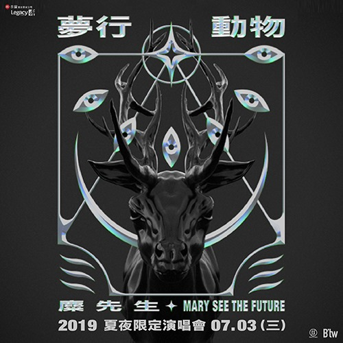
2019年9月Mary See the Future X 麋先生：「夢行動物」夏夜限定演唱會
星夜裡的夢境，是我們的野生遊樂園，細嚐每段月光下的回憶童話，化身成一個沒有名
字的物種，預知了將在這多雨的城市，與屬於同類的那個某某某相見。Mary See the
Future X 麋先生 Mixer「夢行動物」 夏夜限定演唱會。隨著夢行動物，做一場一生一
次的夢中夢。
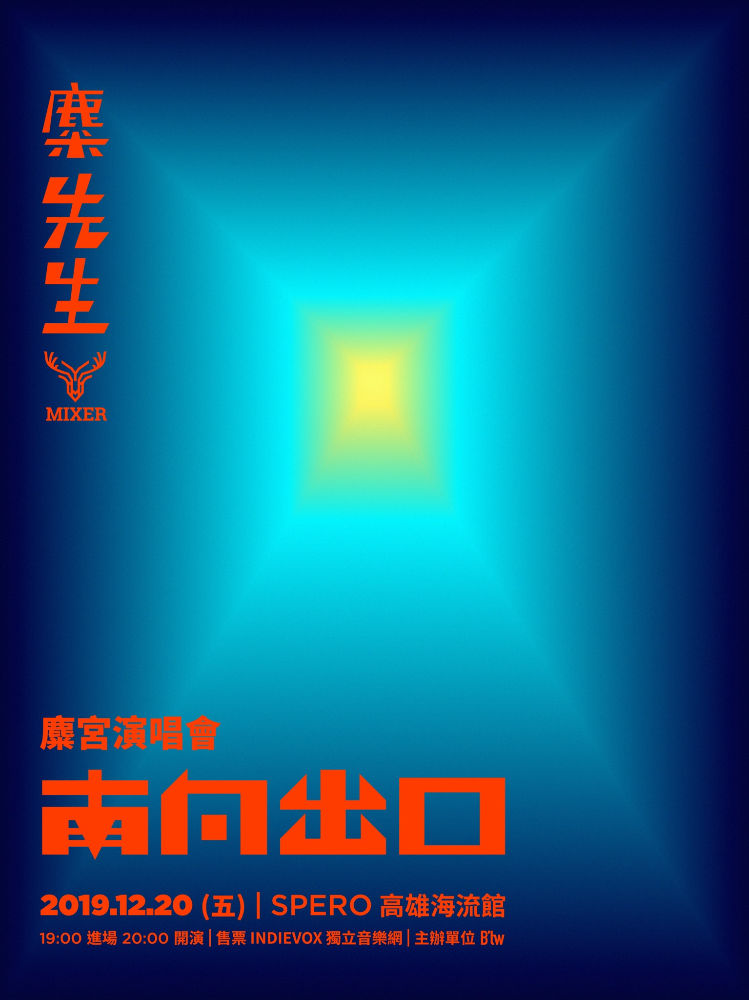
2019年12月麋宮演唱會-南向出口
趨光性使我們不假思索地聚集，不停止腳步，是往心的最底層前進，出口並不是終點
，而是遇見嶄新的自己。一起走囉!麋宮南向出口見。
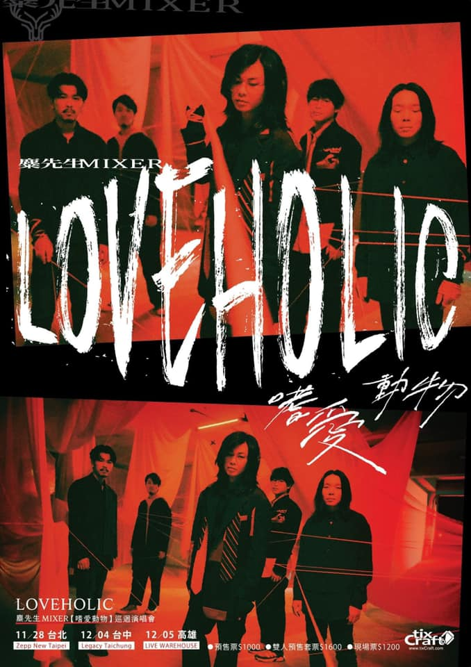
2019年11月LOVEHOLIC【嗜愛動物】巡迴演唱會
不停地嗜愛，不停的是愛。也好久沒有，不停地LIVE。久等的嗜愛動物，久違的LIVE
演出。LOVEHOLIC ，帶著這份壓抑太久的愛，一起成為重回現場的LIVEHOLIC